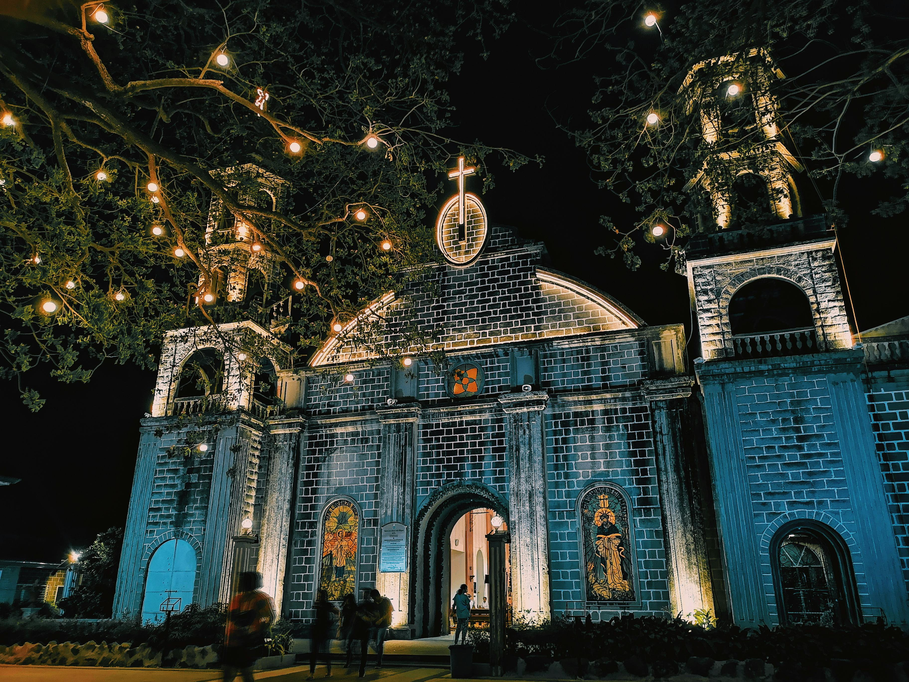

JanuaryDinagyang Festival
Iloilo City
One of the most spectacular festivals in the Philippines, Dinagyang is a religious and cultural event celebrated every fourth Sunday of January. Tribes dressed in elaborate painted costumes and headdresses perform choreographed dances through the city streets in honor of the Santo Niño. It draws hundreds of thousands of visitors annually and is a multi-awarded tourism event recognized both locally and internationally.